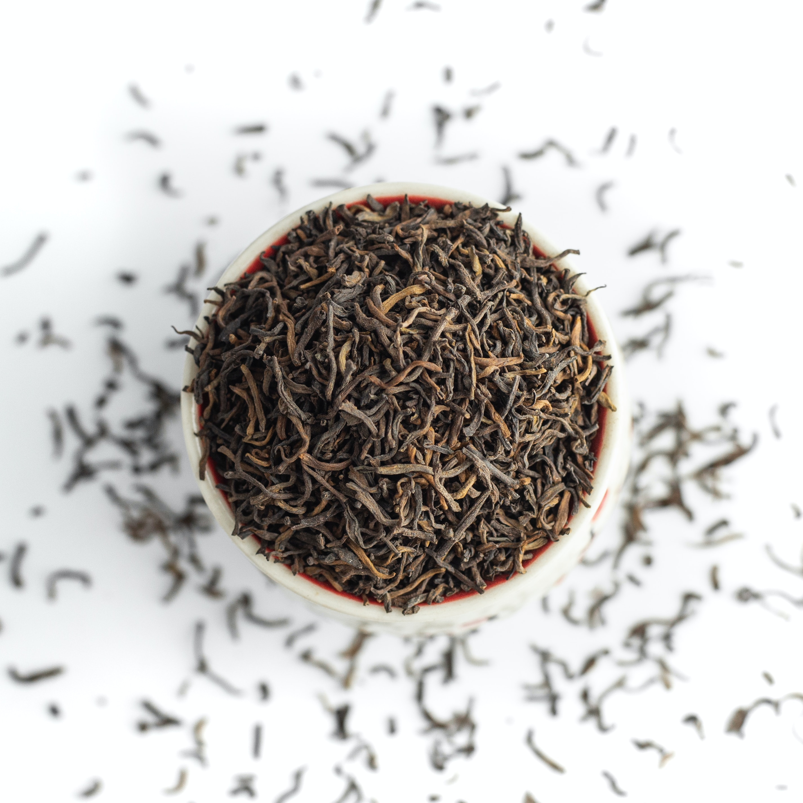

Esistono tre diverse tecniche per eseguire al meglio questo metodo di conservazione delle piante commestibili, e poter approfittare delle loro proprietà anche fuori stagione.
Alcune regole per la consevazione
Queste regole valgono sempre, sia che utilizziate la pianta per la preparazione di oleoliti, sia che la adoperiate per l’elaborazione dei vostri piatti.
Una volta raccolte le piante, preparatele per essiccazione il prima possibile. Foglie, radici, frutti e fiori potrebbero marcire o alterarsi facilmente se lasciati per troppo tempo in buste chiuse o ammassati;
Prima di disporli per essiccazione, scuotete rami e foglie e controllate bene ogni parte del materiale raccolto per assicurarvi che non ci siano residui di terra o parassiti. La pianta deve avere un aspetto sano e pulito;
È sconsigliato lavare il materiale vegetale raccolto poiché potrebbe alterare il processo di conservazione e favorire l’insorgere di muffe;
Se avete dei dubbi sulla provenienza e salute della pianta, il consiglio è di evitare la conservazione.
Essiccazione naturale (prima tecinica)
Questa è la tecnica più tradizionale, adatta per essiccare piante con rami e foglie, tipo rosmarino, timo, basilico, etc. Consiste nel realizzare dei mazzetti piccoli da legare con dello spago da cucina alla base, stando attenti a non stringere troppo per non danneggiare i rami e per permettere all’aria di circolare e asciugare uniformemente la pianta. I mazzetti si appendono con le foglie rivolte verso il basso, in un ambiente secco e arieggiato dove non arrivi la luce diretta del sole. Con questa tecnica, i tempi di essiccazione variano dai 7 ai 20 giorni in base al tipo di pianta.

Essiccazione naturale (seconda tecnica)
Un’altra opzione consiste nel disporre il materiale raccolto su dei canovacci da cucina puliti o in apposite ceste in vimini o materiali simili. Nel secondo caso, è importante che la cesta (o contenitore) sia abbastanza ampio da permettere il passaggio dell’aria. Si consiglia di cambiare la posizione dei rami, radici, foglie o fiori ogni 2-3 giorni, in modo che essiccamento sia più uniforme. I tempi, anche in questo caso vanno dai 7 ai 20 giorni.
Essiccazione con forno
Se non avete molto spazio a disposizione e preferite tecniche più veloci, l’uso del forno potrebbe essere la tecnica più adatta voi. Le piante si distribuiscono sulla teglia rivestita con della carta da forno e si procede all’essiccazione ad una temperatura di 40-50 gradi. Durante questo procedimento si consiglia di mantenere lo sportello del forno leggermente aperto, in modo che la temperatura sia sempre sotto controllo. I tempi variano a seconda del tipo di pianta, perciò è bene controllare spesso e ritirare la teglia quando si nota che le foglie iniziano ad assumere un colore grigio-verde.
Vedi anche..

Fai da te
2 Luglio 2023
Sapone alla salvia

Ricette
2 Luglio 2023
Tagliatelle ai funghi

Ricetta
28 Maggio 2023